9 有益大脑的数学思维游戏
《美国医学会杂志》曾刊文指出，一般来说，人的大脑在30岁便开始衰老；40岁后，人体新陈代谢逐渐变缓，大脑细胞功能随之减退，体力、记忆力、反应力下降，定位能力、身体协调性不及从前；60岁后，大脑以每年15%的速度萎缩。
生活丰富、多用脑的人，大脑衰老速度较慢，读书和思考对大脑的刺激会促使神经突触变丰富，延缓衰老进程。常读书的人具有较高认知储备，大脑衰老时能发挥缓冲作用，减缓衰老速度，使大脑更能抵抗痴呆症等疾病。让你的大脑和身体“再上岗”。
勤于思考这种习惯最好在孩童时期就养成。不少家长在教育孩子的时候会采用机械式训练，让孩子死记硬背，其实这些训练仅在短时间内能看到明显的效果，表面上孩子确实能够掌握一些具体的知识，但他的思维结构并未发生改变，也就是说思维并没有得到实质性的发展。
孩子的思维是活的，他们对数字概念，例如数、数字、数量关系、排列顺序、数运算、形体特征等有时会突然发生极大的兴趣，对它们的种种变化有着强烈的求知欲，仅仅靠死记硬背是不能提高孩子思维能力的，思维训练游戏能全面开发孩子的大脑潜能，培养孩子的数学发散思维，提高孩子的学习能力，这类游戏能够帮助孩子学会思考，主动探讨，在逻辑思维和逆向思维上有着很大的帮助。这种方式不仅能够培养孩子对数学的兴趣，还能够帮助孩子更轻松地学习数学，锻炼孩子思维的逻辑性和抽象性。
实践证明，机敏聪慧的思维是可以培养、训练的。英国皇家科学院研究发现，经常玩益智游戏的人，比不玩的人平均智商高出11分左右，大脑开放性思维能力较强。美国医学专家则发现，50岁以前开始玩成人益智玩具的人，老年痴呆的发病率只有普通人群的32%，而从小就玩益智游戏的人发病率不到普通人群发病率的1%。
俗话说“玩物丧志”，今天我要说“玩物益智”。这里26个数学游戏是我这些年来在美国中小学及老人中心给不同人玩的数学游戏。
数图
【游戏1】在图中各圆空余部分填上1、2、4、6，使每个圆中4个数的和都是15。
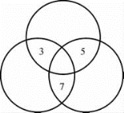
【游戏2】填入1到9这9个数字，让3个圆圈和3条线段上3个数字的数字和一样。
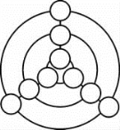
【游戏3】把1，3，5，7，9，11，13，15这8个数，分别填入图中的8个圆圈，让大圆5个圆圈数字和都是39。
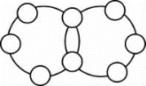
【游戏4】把1，2，3，…，9，10这10个数分别填入图中的10个圆圈，让每个正方形数字和都一样。
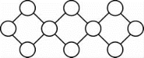
【游戏5】你能将1，2，…，9填入下图中的9个圆圈中，使外面的三角形圆圈之和等于里面的三角形圆圈之和吗？
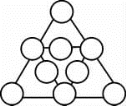
【游戏6】你能把1到9这9个数字填入三角形上的圆圈，使三角形每边上的4个数字之和相等吗？你能找到几种答案？
【游戏7】将1，2，3，…，9填入如下图所示的圆圈中，每个圆圈恰填一个数，满足下列条件：正三角形各边上的数之平方和除以3余数相等。问：有多少种不同的填入方法？（注意：经过旋转或轴对称反射，排列一致的，视为同一种填法。）
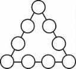
【游戏8】20以内共有10个奇数，去掉9和15还剩8个奇数。将这8个奇数填入下图的8个圆圈中（其中“3”已填好），使得用箭头连接起来的4个数之和都相等。
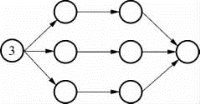
【游戏9】将1，2，3，…，12这12个数分别填入下图中的各个圈内，使每条线段上5个圈内数的和相等，并且2个六边形的6个顶点上圈内数的和也相等。
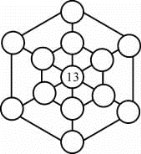
【游戏10】图中有10个小三角形、4个大三角形，请把0～9填入下图中的小三角形内，每格填一个数，使4个大三角形内的数字和相等。
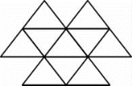
互素图的数学游戏
把能够整除某一个整数的整数，叫做这个数的约数。几个数所公有的约数叫这几个数的公约数。公约数中最大的一个叫做这几个数的最大公约数，最大公约数也称最大公因数、最大公因子，简写为GCD。例如在2、4、6中，2就是2、4、6的最大公约数。GCD（2，4，6）＝2。两个或多个整数的最大公约数是1，我们称它们互素。
现在定义一个有p 个点的图G＝（V，E）是互素图，如果我们可以在它的顶点分别填上1，2，3，4，5，…，p 这些数字，使到每条边两个端点的数的最大公约数是1。
下面是几个互素图的例子。
【例1】
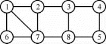
【例2】
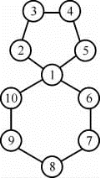
【例3】
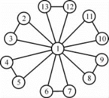
【例4】
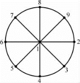
【例5】
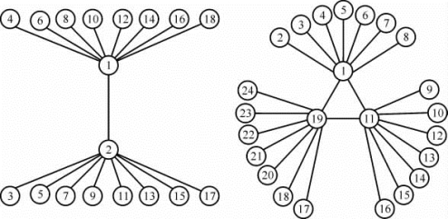
【例6】以下3个图有2个是互素图，第三个不是互素图。
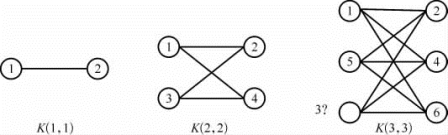
【游戏11】下面的图可以是互素图吗？
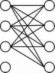
【游戏12】以下的图有哪些是互素图？
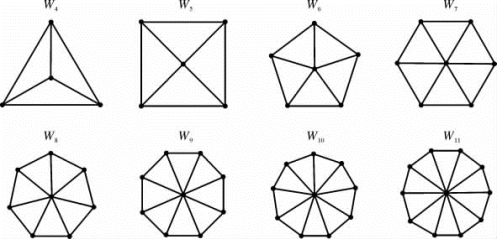
【游戏13】以下的图有哪些是互素图？
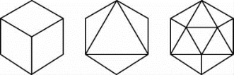
【游戏14】以下的图是不是互素图？
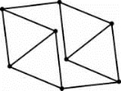
【游戏15】以下的图是不是互素图？
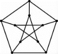
【游戏16】以下是不是互素图？
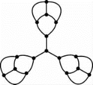
【游戏17】以下是不是互素图？
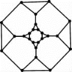
【游戏18】以下是不是互素图？
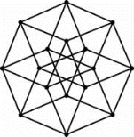
【游戏19】以下的图有哪些是互素图？
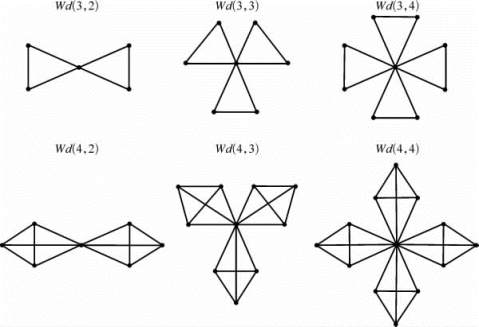
边互素图的数学游戏
现在定义一个图G＝（V，E）是边互素图，如果我们可以在它的边上标1，2，3，…，比方说，底下的图：
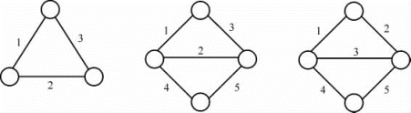
然后在每个顶点填上与它的边连结的数的和。
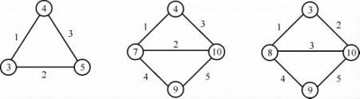
再看每条边的两个端点的数的最大公约数，这些最大公约数都是1，我们就称图是边互素图。
【例7】下图不是边互素图。
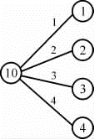
【例8】以下的图是边互素图。
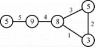
【例9】以下的图是边互素图。
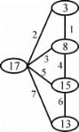
【例10】以下的图是边互素图。
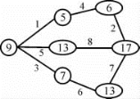
【游戏20】以下的图可以画成边互素图，你知道为什么吗？
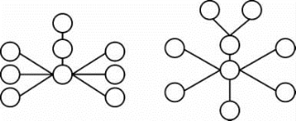
【游戏21】左图是边互素图，右图呢？
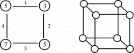
【游戏22】以下的图是边互素图吗？
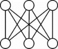
【游戏23】以下的图是边互素图吗？
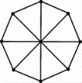
【游戏24】以下的图是边互素图吗？
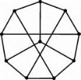
【游戏25】以下的图是边互素图吗？
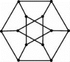
【游戏26】以下的图是边互素图吗？
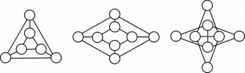
如果想要保持头脑敏锐，那么生活中就需要一定的压力，尤其是需要努力工作带来的瞬时压力。突然的一阵压力能够令身体和大脑在短时间内产生负荷，这对于保持大脑健康而言很有必要。边互素图概念是我创立的，如果读者有兴趣研究边互素图的理论，可以发送电子邮件至：lixueshu18＠sina．com或者lixueshu18＠163．com，和我联系讨论。